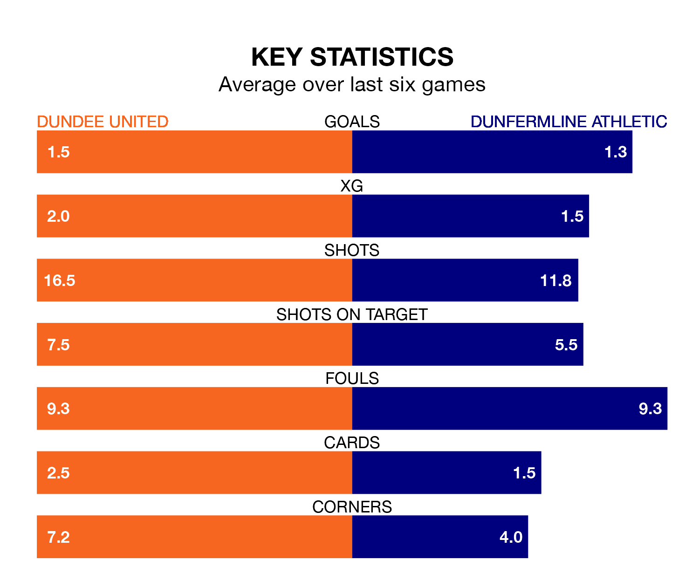

Two of the Championship's meanest defences go head-to-head at Tannadice Park on Saturday, when Dundee United host Dunfermline Athletic.
No teams have conceded fewer goals than Dundee to date: the home side have let in just 10 goals in 20 games.
Dunfermline have conceded 24 goals in 19 games, giving them the third tightest back line so far this season.
Key to the Terrors' home form has been Jack Walton, who has allowed 0.5 goals past him per 90 minutes, compared to 1.13 for Deniz Mehmet in the opposite net.
Dundee are top of the table after 20 games, of which they have won 13 and drawn five, earning 44 points.
Dunfermline are five places behind United in sixth, with six wins and five draws putting them on 23 points.
In the last 10 years, Dundee and Dunfermline have played each other on 20 occasions. Dundee won 14 of them, Dunfermline two, and they drew four times.
On average, the Terrors scored 1.6 goals and Dunfermline 0.6 in those matches.
Their last meeting was on November 10, when Dundee won 2-1 away.
The Terrors' Glenn Middleton is the league's most creative player, racking up 11 assists in 20 appearances so far this season.
For Athletic, Joshua Edwards has set up the most goals, having laid on five assists in 19 games.
The home side are in mixed form in the Championship, with three wins and a draw from their last six games.
With a win and two draws over that period, the visitors' form is worse – they have taken five points from 18, compared to Dundee's 10.
Dundee's last match was on January 12, a 1-0 win against Inverness CT, with Tony Watt getting the goal for the Terrors.
Dunfermline lost 2-1 against Queen's Park last time out, on January 5, with Ben Summers on the scoresheet.
Updated: 09:18 (UTC), 23/01/24